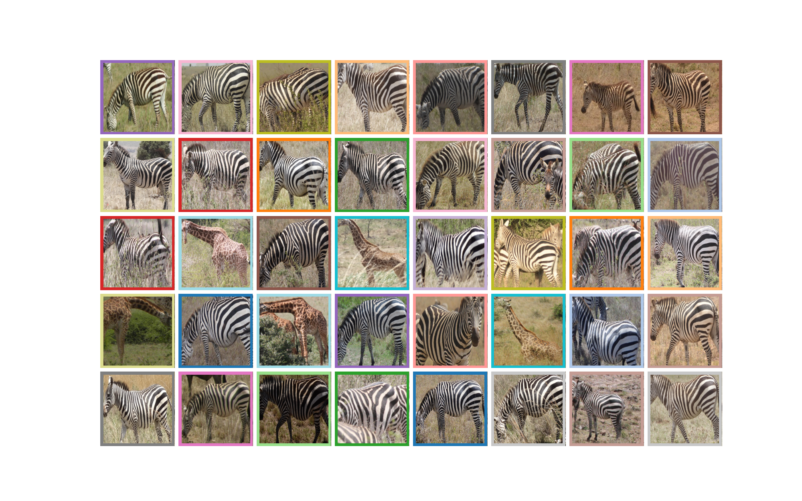

ü¶ìü¶í Great Zebra & Giraffe Count and ID

üìÑ Overview
This dataset contains images taken from a two-day photographic census of Plains zebra and Masai giraffe at Nairobi National Park, Kenya in 2015.
It includes individual IDs for both species, with bounding boxes, metadata such as viewpoint, species, ID; and resized images (≤3000 px).
The IDs were assigned using the HotSpotter algorithm, Crall et al. 2013 by visually matching the stripes and spots as seen on the body of the animal.
⚠️ Usage Notes
- Highly imbalanced: many individuals seen only once.
- Metadata includes viewpoint; useful for studying orientation effects in ReID.
- All images are in the
trainsplit; custom validation/test splits needed.
üß© Enrichments
üì• Access
Original Source: LILA
Enriched Version: Hugging Face
a. Provenance
To access the raw dataset from source, run the following:
from reidhub.access.provenance.gzgc import download_and_extract
dataset_root = download_and_extract()
print(f'Dataset downloaded to: {dataset_root}')
b. Enriched Re-Access
To access the processed, refined and enriched dataset from public mirrors, run the following:
üìú Citation
Parham, J., Crall, J., Stewart, C., Berger-Wolf, T., Rubenstein, D.I.
Animal population censusing at scale with citizen science and photographic identification. AAAI Spring Symposium, 2017. https://cdn.aaai.org/ocs/15245/15245-68194-1-PB.pdf
@inproceedings{parham2017animal,
title={Animal population censusing at scale with citizen science and photographic identification},
author={Parham, Jason and Crall, Jonathan and Stewart, Charles and Berger-Wolf, Tanya and Rubenstein, Daniel I},
booktitle={AAAI spring symposium-technical report},
year={2017}
}
üìö Publications
üéØ Potential Usecases
- Re-ID / Retrieval under class imbalance
- Few-shot learning: many IDs with 1 image only
- Viewpoint analysis for stripes and spot patterns
- Combine with other zebra/giraffe datasets for cross-dataset generalization